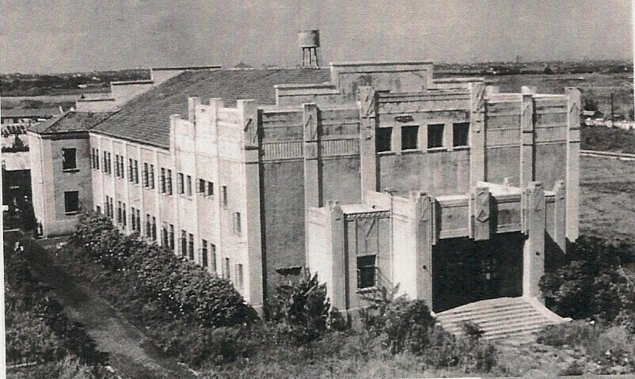
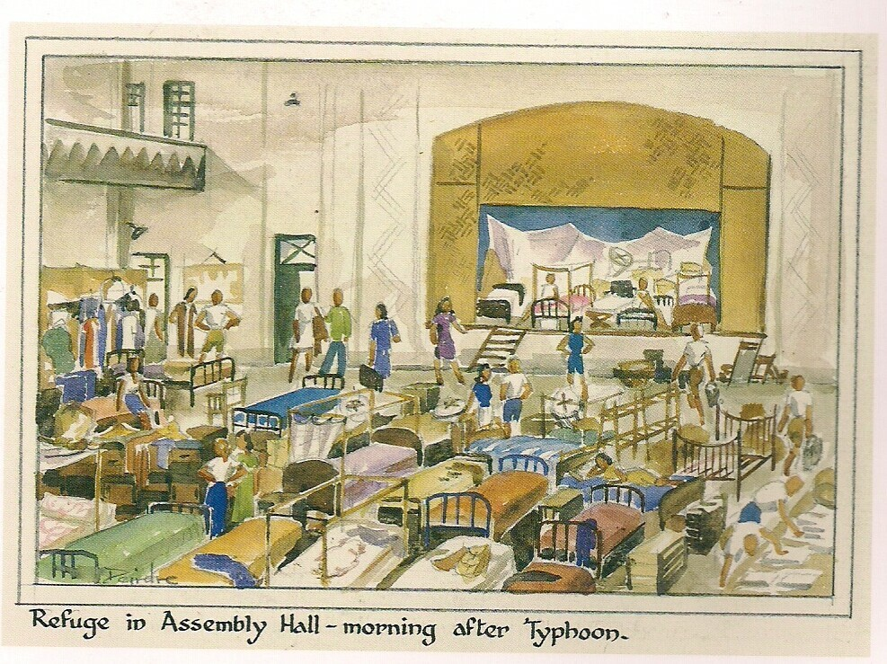
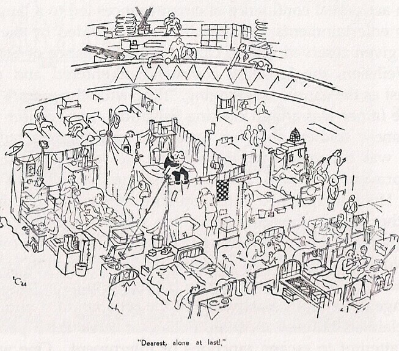

Built as theatre for the campus in 1934 in the fashionable Art
Deco style, the Assembly Center was the largest building housing
families in Lunghwa C.A.C. When a typhoon hit Shanghai in August of
1943 internees in less secure dormitories sheltered here.

A cartoon drawn by an internee makes fun of the lack of privacy inside the Assembly Center

The
Assembly Center also achieved notoriety in the 1960s when Madame Mao,
Chiang Ching, led rehearsals of Revolutionary Operas such as ‘The White
Haired Girl’ and ‘Taking Tiger Mountain By Strategy’ inside on stage.
